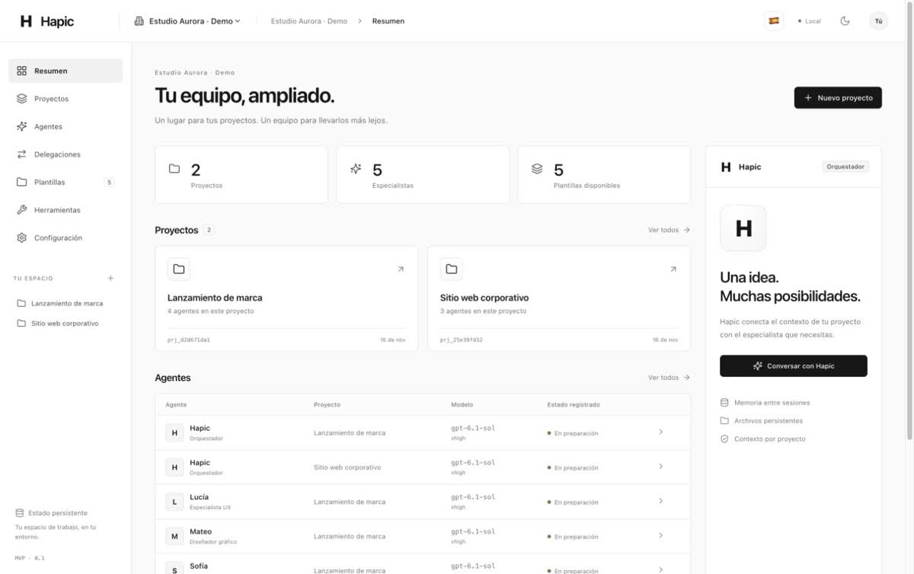
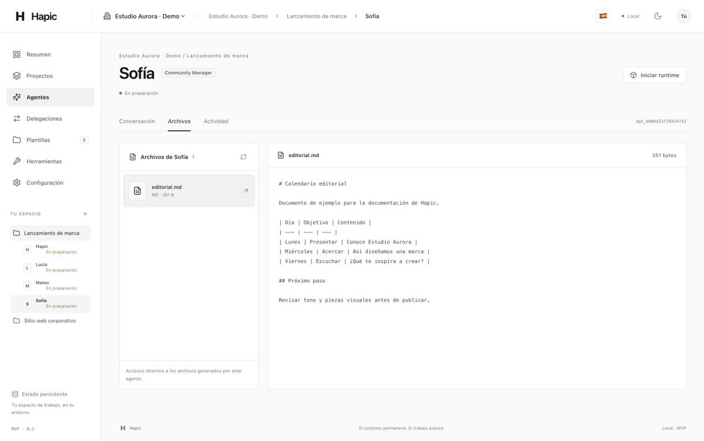

Flujos de agentes personalizados, alrededor de tu proyecto.
MVP local · Código abiertoTu forma de trabajar.
Tu flujo de agentes.
El propósito de Hapic: crear flujos de agentes personalizados. Dale un responsable a cada parte de tu proyecto, conecta su trabajo y conserva los resultados. Las plantillas son un punto de partida; la visión es tu propio equipo y proceso.
- Responsabilidades claras
- Colaboración directa
- Entregables guardados
Disponible hoy: equipos por proyecto, agentes desde plantillas y delegación directa. Previsto: agentes desde cero y una composición de flujos más flexible.
Una conversación.
Trabajo que avanza.
Dale un objetivo a tu especialista. Mira cómo usa el contexto del proyecto, prepara una propuesta y deja un entregable para que lo revises.
- Contexto del proyecto
- Actividad visible
- Entregables para revisar
Conversación ilustrativa con datos de ejemplo. Sin llamadas a IA ni conexiones a servicios.
Del proyecto
a cada archivo.
Agrupa tus proyectos por organización. Cada proyecto reúne a sus agentes, y cada agente conserva su perfil, memoria y carpetas de trabajo.
- Organizaciones
- Proyectos
- Agentes
- Carpetas y archivos
Empieza con un rol.
Construye tu equipo.
Cinco plantillas te ayudan a empezar con un método. Combina responsabilidades alrededor de tu objetivo: cada agente tiene memoria y archivos propios y puede delegar a colegas del mismo proyecto.
Cómo funcionan la delegación y la preparación
El panel Delegaciones permite filtrar por participante o estado y revisar contexto, resultados y errores. Se actualiza cada seis segundos. Ejecutar tareas requiere una API key de OpenAI y el runtime Docker del destinatario iniciado, y puede generar consumo de API. El remitente no continúa automáticamente; un turno finalizado puede informar trabajo parcial o bloqueado.
Sigue la preparación de cada agente: perfil, requisitos, configuración, red, imagen, contenedor y API. Selecciona un nodo para consultar registros guardados y etapas pendientes. El selector muestra En preparación hasta completar el arranque. Mientras el agente se prepara, el flujo con su nombre sustituye al chat; este aparece solo al confirmar disponibilidad y conexión con OpenAI. El flujo se actualiza cada tres segundos; la falta de Docker o credenciales queda visible. Los registros contienen hitos seguros de Hapic, sin credenciales.
- UX
- Diseño gráfico
- Arquitectura
- Código
- Community Manager
Previsto · Agentes desde ceroDefine un rol, instrucciones y herramientas propios para crear un agente completamente personalizado, sin partir de una plantilla.
El trabajo toma
forma en archivos.
Abre los briefs, planes, código, imágenes y calendarios guardados por cada agente desde una lista de accesos directos. Revisa sus entregables al instante, sin recorrer carpetas internas.
- Entregables de tu agente
- Acceso directo
- Vista previa
Tus herramientas.
Más posibilidades.
Dale a tu equipo datos para trabajar. Conecta un canal autorizado de YouTube y elige qué agentes pueden leer vídeos, comentarios y métricas. Requiere configurar OAuth en el servidor. HeyGen y ElevenLabs están previstos.
- YouTubeDisponible · Solo lectura
- HeyGenIntegración prevista
- ElevenLabsIntegración prevista
Mostrando Tu flujo.
Empieza por el resultado que buscas
Un objetivo. Tu forma de llegar.
Explora cómo repartir el trabajo. Hoy puedes formar estos equipos desde plantillas y usar la delegación directa. La visión: definir tus propios agentes y componer flujos personalizados.
Secuencias de trabajo ilustrativas. Aquí no se ejecutan agentes. El remitente consulta cada resultado delegado; no continúa automáticamente. El editor visual de flujos y la creación de agentes desde cero aún no están disponibles.
Dentro de Hapic
Mira dónde vive el trabajo.
Capturado en la interfaz real en español, con proyectos y documentos de ejemplo independientes. Los agentes están pendientes de iniciar; estas capturas no muestran una ejecución de IA.


Documentación técnica
Una base clara para tu equipo.
React / Vite → FastAPI → un contenedor Hermes por agente. SQLite y archivos locales conservan el estado. El backend gestiona permisos, delegaciones y acceso a herramientas.
Tu proyecto marca el flujo.
Empieza con un objetivo, reúne tu equipo y revisa lo que produce.